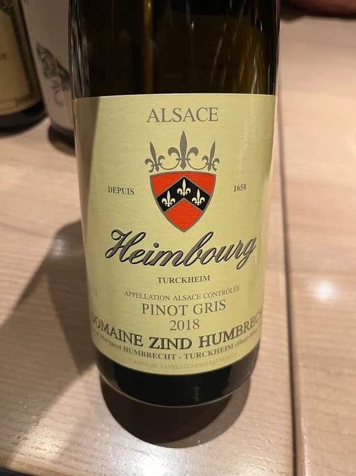

- Type
- White Still, Dry
- Producer
- Domaine Zind Humbrecht
- Vintage
- 2018
- Location
- France, Alsace AOC
- Grapes
- Pinot Gris
- Alcohol
- 13
- Sugar
- 1.7
- Price
- 1576 UAH
- Cellar
- N/A
Ratings
2022-12-13 - 8.00
I tasted it blind and didn’t guess at all. What an interesting Pinot Gris! Alright, that’s because I am not familiar with the Alsace style. Expressive bouquet of rust, bruised fruits, moss, honeysuckle, smoke, white pepper and citrus. Almost full-bodied with high and soft acidity, oily texture, slightly fizzy, with a long and pleasantly bitter finish. Wow.
Wine #4 on the To Each Their Own Vol. 1. It took 3rd place out of 7.